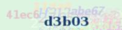
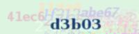

不動產法規～10分鐘搞懂何謂違章建築-119 @ 鑑價專業網~不動產估價 預售屋估價 新成屋估價 都市更新估價 :: 痞客邦 ::

華信電子週報 <不動產行情、不動產估價、不動產法規類> 週報主題： 10分鐘搞懂～何謂違章建築 前言：從台灣都市空照圖中，不難發現到處充斥著五顏六色的鐵皮屋頂，不僅影響都市景觀，也影響都市防災，降低生活品質，因為台灣地狹人稠，每家每戶都希望能多增加自己的生活空間，但在增加自己空間同時亦影響到鄰居空間，造成鄰居與鄰居間產生摩擦，那到底什麼是違章建築?違章建築有合法性?及違章建築價值如何評估呢?本期電子報將針對違章建築相關問題作探討。如有錯誤或遺漏之處，尚請不吝指正，謝謝！ 一、 違章建築定義
依違章建築處理辦法第2條規定：「本辦法所稱之違章建築，為建築法適用地區內，依法應申請當地主管建築機關之審查許可並發給執照方能建築，而擅自建築之建築物。」 簡單說就是建築法地3條規定之地區，實施都市計畫地區、實施區域計畫地區、經內政部指定地區，未經當地主管機關核發建築使用執照或已核發建築使用執照與原申請項目不符，而擅自建築之建築物，稱之為違章建築。 二、 違章建築類型及處理方式 依臺北市違章建築處理要點第3條規定如下：

三、 新違建之處理方式 新違建原則上應查報拆除。但符合下列規定者，得免予查報或拍照列管，但前項免予查報或拍照列管之新違建，若經消防、交通主管機關認定有妨礙消防安全、公共通行者，查報拆除。 (一) 建築物外牆以非鋼筋混凝土材料搭蓋之雨遮，其淨深一樓未超過九十公分、二樓以上未超過六十公分或位於防火間隔（巷）未超過五十公分，且不超過各樓層之高度者，免予查報。 前項尺寸以建築物外緣突出之水平距離計算。 (二) 以竹、木或輕鋼架搭建之無壁體花架，其頂蓋透空率在三分之二以上而面積在三十平方公尺以下，且位於屋頂平台最高高度在二公尺以下、露台或法定空地高度在二、五公尺以下或低於該層樓高度，及未占用法定停車空間、避難平台、巷道或防火間隔（巷）者，免予查報。 (三) 設置於法定空地之假山水或魚池等景觀設施，未占用巷道、騎樓地、無遮簷人行道、法定停車空間或防火間隔（巷）者，免予查報。 (四) 建築物依法留設之窗口、陽台或位於防火間隔（巷）之外牆，裝設透空率在百分之七十以上之欄柵式防盜窗，其淨深未超過五十公分，且面臨道路或基地內通路者，應留設有效開口並未上鎖者，免予查報。 本要點發布實施前已設置完成之防盜窗應依前項規定設置有效開口，違反者查報拆除。 第一項有效開口規定如下： 1.十層以下樓層為淨高一百二十公分以上、淨寬七十五公分以上或內切直徑一百公分以上之開口或圓孔。 2.十一層以上樓層為淨高及淨寬各為五十公分以上或內切直徑五十公分以上之開口或圓孔。
(五) 領有使用執照之建築物，二樓以上陽台加窗或一樓陽台加設鐵捲門、落地門窗，且原有外牆未拆除者，免予查報。但建造執照所載發照日期為九十五年一月一日以後者，其建築物之陽台上加裝窗戶、鐵捲門、落地門窗視為樓地板之增加行為，未經檢討建蔽率、容積率及相關法規並領得建造執照者，一律查報拆除。 (六) 家禽、家畜棚舍、鴿舍或寵物籠舍等，其高度在一．五公尺以下、面積在六平方公尺以下，且未占用法定停車空間、開放空間、巷道或防火間隔（巷）者，免予查報。但鴿舍位於飛航管制區者，查報拆除。 (七) 碟形天線，直徑在三公尺以內、高度在九公尺以下者，免予查報。 設置於屋頂平台（不含避難平台）之碟形天線，未超過建築面積八分之一者，免予查報。 (八) 陽台、欄杆及女兒牆等修築，其高度在一．五公尺以下者，免予查報。 (九) 設置於建築空地或法定空地上之欄柵式圍籬，其高度在二公尺以下、牆基在六十公分以下、透空率在百分之七十以上，且未占用法定停車空間者，拍照列管。 (十) 住宅區依綜合設計放寬規定留設之公寓大廈開放空間，於建築基地內設置前條之欄柵式圍籬，符合下列規定者，拍照列管： 1.該公寓大廈管理委員會在本府報備有案。 2.經區分所有權人會議之決議設置。 3.於每日上午七時起至下午十時止開放供不特定人使用。 4.於適當位置設置可供無障礙進出使用之活動門，其寬度在四公尺以上，且於開放時間內全部打開。 5.非設置於沿計畫道路留設之人行步道、無遮簷人行道、現有巷道或有必要長時間留供公眾通行使用之土地。 (十一) 搭建於建築物主要出入口或共同出入口至建築線間之無壁體透明棚架，其高度在三公尺以下或低於一樓樓層高度、寬度在二公尺以下，且未占用騎樓、防火間隔（巷）者，拍照列管。 (十二) 搭建於建築物露台或一樓法定空地之無壁體透明棚架，其高度在三公尺以下或低於該層樓層高度，每戶搭建面積與第六點雨遮之規定面積合併計算在三十平方公尺以下，且未占用開放空間、巷道、防火間隔（巷）或位於法定停車空間無礙停車者，拍照列管。 (十三) 設置於法定空地內之守望相助崗亭，其面積在四平方公尺以下、高度在二．五公尺以下，未有基礎定著於土地，未占用法定停車空間或防火間隔（巷），且未影響公眾通行者，拍照列管。 (十四) 設置於法定空地上之露天空調設備，其高度在一．二公尺以下、體積在一．五立方公尺以下，且未占用騎樓地、開放空間、法定停車空間、巷道或防火間隔（巷）者，拍照列管。 (十五) 設置於屋頂平台之空調設備，符合建築技術規則建築設計施工編第九十九條規定，並經建築師或相關技師簽證結構安全無虞，且取得頂樓建築物區分所有權人同意及符合下列規定之一者，拍照列管。但經環保局認定違反相關法令者，查報拆除： 1.依法成立公寓大廈管理組織之公寓大廈，應依公寓大廈管理條例第二十九條規定，由該公寓大廈區分所有權人會議之同意。但公寓大廈規約另有規定者，從其規定。 2.未依法成立公寓大廈管理組織之公寓大廈，須經該棟公寓大廈區分所有權人過半數及其區分所有權比例合計過半數之同意。 (十六) 夾層屋違建符合下列規定之一者，拍照列管。其不符合者，應予查報拆除： 1.曾向本局報備有案。 2.於民國八十三年十二月三十一日以前施工完成，並取得建築師或相關技師簽證認無礙結構安全及無礙消防安全之證明者。 四、 既存違建之處理 既存違建拍照列管，列入分類分期計畫處理。 但大型違建、有危害公共安全、山坡地水土保持、妨礙公共交通、公共衛生、市容觀瞻或都市更新之違建，將由計畫優先執行查報拆除。 （一）危害公共安全指有下列情形之一者： 1.阻礙或占用建築物之防火間隔（巷）。 2.供不特定對象使用，具高危險性及出入人員眾多之場所，如視聽歌唱、理容院、三溫暖、舞廳、舞場、酒家、酒吧、特種咖啡茶室、資訊休閒業、飲酒店、電影院、歌廳、夜總會、補習班、百貨公司、營業性廚房、旅館、保齡球館、學前教育設施、醫院、社會福利機構、遊藝場、面積在三百平方公尺以上大型餐廳、違規地下加油（汽）站、違規地下爆竹工廠、違規砂石場、學生宿舍、屋頂既存違建裝修隔出3個以上(含3個)之使用單元等使用。 3.前目以外供公眾使用建築物，經公共安全檢查，認定有阻礙或占用建築物逃生避難通道或違反建築技術規則建築設計施工編第九十九條屋頂避難平台規定。 4.有傾頹、朽壞或有結構安全之虞，經鑑定有危害公共安全。 5.經本府消防局認定妨礙消防安全。 （二）危害山坡地水土保持：指水土保持法公布施行前位於山坡地範圍內，經山坡地主管機關認定有危害水土保持者。 （三） 妨礙公共交通：指占用道路、人行道、騎樓或經本府交通局、警察局、消防局、工務局養護工程處等目的事業主管機關認定有影響公共交通者。 （四）妨礙公共衛生指有下列情形之一者： 1.妨礙衛生下水道之施作、埋設或化糞池、排水溝渠之清疏。 2.經本府目的事業主管機關認定有危害居住環境衛生。 （五）妨礙市容觀瞻或都市更新：指經本局會同本府都市發展局、文化局、衛生局會勘認定衝擊週邊居住環境或妨礙都市更新之推動者。 五、 何謂合法違建？ 以台北市為例，因為房價高漲，寸土寸金，所以只要是頂樓加蓋的舊公寓，價格上還會往上加個幾成，且民國八十四年前既存的違建，買屋的民眾都會聽房仲說，這是不會被拆的「合法違建」。但是這是房仲給予民眾錯誤認知，就司法實務見解是，既然是違建就沒有所謂的合法性，僅是被列為「緩拆件」，加上頂樓平台是屬於逃生或全體住戶活動用途，只要逾越此使用目的，即屬侵害其他住戶權益，一旦訟訴，依民法規定，必須「排除侵害」，也就是必須拆除，所以根本就沒有所謂的「合法違建」。
六、 頂樓違建可否辦理登記？
首先必須注意到頂樓違建部份，是屬於不合法故無法取得建物使用執照，所以也無法取得建物所有權第一次登記，依民法地758條之規定「不動產物權，依法律行為為而取得、設定、喪失及變更者，非經登記，不生效力」，故違建物在法律上是無法登記，也無法辦理所有權移轉登記，因此就算是不同型式的口頭，合約書、書面聲明，在法律上不具效力的。
七、 頂樓違建價格如何估算？ 為什麼這麼多人對於頂樓加蓋公寓產品如此感興趣呢?因為違建部分還是有實用價值，加上前面所提的民國八十四年前既存的違建，是屬於緩拆件，相對新違建拆除風險較小，故頂樓加蓋違建還是有其市場性，但是違建物無法列入產權計算範圍，亦無法取得法律上得保障，所以市場上有不成文規定，違章建築價格約為標準產品價的30％至50％左右。
八、 都市更新違建建築之處理 依據都市更新條例第41條之規定，權利變換範圍內占有他人土地之舊違章建築戶處理事宜，由實施者提出處理方案（現地安置、現金補償、異地安置），納入權利變換計畫內一併報核；有異議時，準用第三十二條規定辦理。但違建建築戶之認定，僅以民國七十七年八月一日以前興建完成者為限。
九、 結論 很多人對於頂樓加蓋公寓產品趨之若騖，認為買到多賺到頂樓空間，加上民眾錯誤認知的「合法違建」，不會被拆除，殊不知所為的「合法違建」還是有其風險性，期望藉由這篇電子報跟各位分享與探討，惟如有錯誤之處，尚請不吝指正，謝謝。


 鑑價專業網~不動產估價 預售屋估價 新成屋估價 都市更新估價
鑑價專業網~不動產估價 預售屋估價 新成屋估價 都市更新估價
 hunhsin 發表在 痞客邦 留言(15)
hunhsin 發表在 痞客邦 留言(15)


hunhsin 於 2014/08/20 14:54 回覆


hunhsin 於 2014/10/27 16:02 回覆


hunhsin 於 2015/03/09 14:53 回覆


hunhsin 於 2016/03/24 10:56 回覆


hunhsin 於 2018/07/10 09:29 回覆


您尚未登入，將以訪客身份留言。亦可登入留言
 
